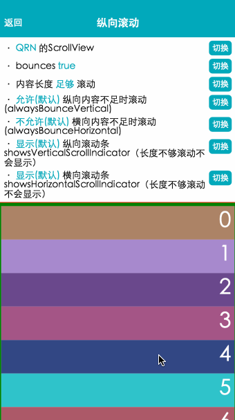

QScrollView >=0.20.0
包含了平台的 ScrollView 组件，并集成了触摸锁定的“响应者”系统
- 需要记住 ScrollView 必须有一个确定的高度才能正常工作。因为其本质是将一系列高度不确定的子组件 放进一个高度确定的容器，然后通过滚动来进行操作。
- 要让 ScrollView 高度确定，要么直接给它设置高度（不推荐），要么确定其所有的父容器都已经绑定了高度。
- 在视图栈中的任一视图中忘记使用
{flex:1}都会导致错误，你可以通过元素审查器轻松地定位 bug。 - 如果你想使用嵌套，内层元素会在滚动方面没有滚动余地时释放控制权，但注意always*系列为true的情况下也会被视为有滚动余地 
contentInset { EdgeInsetsPropType }
内容范围相对滚动视图边缘的坐标。
默认值: {top: 0, left: 0, bottom: 0, right: 0}
contentOffset { PointPropType }
用来手动设置初始的滚动坐标。
默认值: {x: 0, y: 0}
alwaysBounceHorizontal { bool }
当此属性为true时，水平方向即使内容比滚动视图本身还要小，也可以弹性地拉动一截。
默认值: 当horizontal={true}时默认值为true，否则为false。
alwaysBounceVertical { bool }
当此属性为true时，垂直方向即使内容比滚动视图本身还要小，也可以弹性地拉动一截。
默认值: 当horizontal={true}时默认值为false，否则为true。
bounces { bool }
当值为true时，如果内容范围比滚动视图本身大，在到达内容末尾的时候，可以弹性地拉动一截。如果为false，尾部的所有弹性都会被禁用，即使alwaysBounce*属性为true。默认值为true。
默认值: true
contentContainerStyle { View.propTypes.style }
ScrollView内容容器的样式，所有的子视图都会包裹在内容容器内。
decelerationRate { number|'fast'|'normal' }
一个浮点数，用于决定当用户抬起手指之后进行惯性滚动时，滚动视图减速停下的速度。normal为0.998，fast为0.9。
默认值: 'normal'（即：0.998）
horizontal { bool }
水平滚动。当该属性为true的时候，所有的的子视图会在水平方向上排成一行，而不是默认的在垂直方向上排成一列。
默认值: false
onScroll { function }
在滚动的过程中，每帧调用一次此回调函数。
方法参数:
| 参数名 | 类型 | 描述 | 必选 | 版本 |
|---|---|---|---|---|
| event | e | 滚动事件，由nativeEvent({contentOffset: {x: x, y: y}})组成 |
onScrollAnimationEnd { function }
当滚动动画结束之后调用此回调。
方法参数:
| 参数名 | 类型 | 描述 | 必选 | 版本 |
|---|---|---|---|---|
| event | e | 由nativeEvent({contentOffset: {x: x, y: y}})组成 |
pagingEnabled { bool }
当值为true时，滚动条会停在滚动视图的尺寸的整数倍位置。这个可以用在水平或垂直的分页上。默认值为false。
注意：当使用pagingEnabled属性的时候，不允许在非scroll方向上使用 alwaysBounce* 属性。即：当 horizontal 为 true，pagingEnabled 为 true 的时候，不允许使用 alwaysBounceVertical ；当 horizontal 为 flase，pagingEnabled 为 true 的时候，不允许使用 alwaysBounceHorizontal
默认值: false
scrollEnabled { bool }
当值为false的时候，内容不能滚动，默认值为true。
默认值: true
showsHorizontalScrollIndicator { bool }
当此属性为true的时候，显示一个水平方向的滚动条。
默认值: false
showsVerticalScrollIndicator { bool }
当此属性为true的时候，显示一个垂直方向的滚动条。
默认值: true
stickyHeaderIndices { array[number] }
一个子视图下标的数组，用于决定哪些成员会在滚动之后固定在屏幕顶端。举个例子，传递stickyHeaderIndices={[0]}会让第一个成员固定在滚动视图顶端。
keyboardDismissMode { one of [none, on-drag, interactive] @ description none（默认值），拖拽时不隐藏软键盘。on-drag 当拖拽开始的时候隐藏软键盘。interactive 软键盘伴随拖拽操作同步地消失，并且如果往上滑动会恢复键盘。[interactive未实现] }
keyboardShouldPersistTaps { bool @ description 当此属性为false的时候，在软键盘激活之后，点击焦点文本输入框以外的地方，键盘就会隐藏。如果为true，滚动视图不会响应点击操作，并且键盘不会自动消失。默认值为false，现在也只支持false。 }
onMomentumScrollBegin { function }
(event) => void
惯性滚动开始时的回调。
方法参数:
| 参数名 | 类型 | 描述 | 必选 | 版本 |
|---|---|---|---|---|
| event | obj | {nativeEvent: {contentOffset: {x: number, y: number}} |
onMomentumScrollEnd { function }
(event) => void
惯性滚动结束时的回调。
方法参数:
| 参数名 | 类型 | 描述 | 必选 | 版本 |
|---|---|---|---|---|
| event | obj | {nativeEvent: {contentOffset: {x: number, y: number}} |
onScrollBeginDrag { function }
(event) => void
拖拽滚动开始时的回调。
方法参数:
| 参数名 | 类型 | 描述 | 必选 | 版本 |
|---|---|---|---|---|
| event | obj | {nativeEvent: {contentOffset: {x: number, y: number}} |
onScrollEndDrag { function }
(event) => void
拖拽滚动结束时的回调。
方法参数:
| 参数名 | 类型 | 描述 | 必选 | 版本 |
|---|---|---|---|---|
| event | obj | {nativeEvent: {contentOffset: {x: number, y: number}} |
refreshControl { element }
指定RefreshControl组件，用于为ScrollView提供下拉刷新功能。
loadControl { element }
指定LoadControl组件，用于为ScrollView提供上拉加载功能。
onContentSizeChange { function }
ScrollView内容容器onLayout时触发，所有的子视图都会包裹在内容容器内。
方法参数:
| 参数名 | 类型 | 描述 | 必选 | 版本 |
|---|---|---|---|---|
| width | number | 内容容器宽度 | ||
| height | number | 内容容器高度 |
style { View.propTypes.style }
ScrollView的样式。
scrollTo
滚动到某一位置，如果只在某一方向滚动，可以只传{x: x}或{y: y}。默认animated为true。
** 如果使用了RefreshControl组件，则y需要包含RefreshControl组件的高度。即：滚动到顶部，正常是 scrollTo({y: 0})
方法参数:
| 参数名 | 类型 | 描述 | 必选 | 版本 |
|---|---|---|---|---|
| options | obj | 滚动配置 | ||
| options.x | number | 横向位移 | ||
| options.y | number | 纵向位移 | ||
| options.animated | bool | 是否动画 | ||
| options.duration | number | 动画时长 |
setContentOffsetBeforeLayout
本方法用来设置contentOffset相对当前的contentOffset偏移多少，在下一次render的时候会生效。本方法的主要使用场景是，当滚动内容的高度发生变化时（尤其是变小时），希望render之后，用户看到的内容位置是不变的。
方法参数:
| 参数名 | 类型 | 描述 | 必选 | 版本 |
|---|---|---|---|---|
| position | PointPropType{x:x,y:y} | 设置相对当前contentOffset的位移量 |
startRefreshing
当前组件有refreshControl属性，并且没有正在下拉刷新，则强制触发下拉刷新，变成正在刷新的状态。fromResponder为true为通过手势scroll触发，false表示是强制触发的
方法参数:
| 参数名 | 类型 | 描述 | 必选 | 版本 |
|---|---|---|---|---|
| fromResponder | bool | 是否通过js强制刷新 |
stopRefreshing
当前组件有refreshControl属性，并且正在下拉刷新，则停止下拉刷新的状态。默认带有动画，可以设置{animated: false}取消。
startLoading
当前组件有loadControl属性，并且没有正在加载，则强制触发加载更多，变成正在加载更多的状态
stopLoading
当前组件有loadControl属性，并且正在加载，则停止加载更多的状态
'use strict';
import React, { Component } from 'react';
import {ScrollView, StyleSheet, Text, TouchableHighlight, View, AppRegistry} from 'qunar-react-native';
const styles = StyleSheet.create({
wrapper: {
borderRadius: 5,
marginBottom: 5,
},
button: {
backgroundColor: '#eeeeee',
padding: 10,
},
text: {
padding: 10,
}
});
class Example extends Component {
constructor(props) {
super(props);
this.state = {
data: getCoupleOfRandomColor(100),
}
}
render() {
let content = this.state.data.map((item, index)=>{
return (
<View style={{height: 50, backgroundColor: item}} key={index}>
<Text style={styles.itemText}>{index}</Text>
</View>
)
})
return (
<ScrollView
onScroll = {(e)=>{console.info('onScroll')}}
>
{content}
</ScrollView>
);
}
}
function getCoupleOfRandomColor(num) {
var colors = [];
for(var i = 0; i < num; i++) {
colors.push(getRandomColor());
}
return colors;
}
function getRandomColor() {
var letters = '3456789ABC'.split('');
var color = '#';
for (var i = 0; i < 6; i++ ) {
color += letters[Math.floor(Math.random() * 10)];
}
return color;
}